- Home
- Categoria
- Equipes
- Quiz
A primeira tentativa de envolvimento da Alpine na Fórmula 1 remonta a 1968, quando o Alpine A350 foi construído, movido por um motor Gordini V8. No entanto, após o teste inicial com Mauro Bianchi em Zandvoort, o projeto foi encerrado quando foi descoberto que o motor produzia cerca de 300 cavalos em comparação com os 400 dos motores Cosworth V8. Após o projeto ser abandonado o A350 foi destruído. Em 1975, a empresa produziu o protótipo Alpine A500 para testar um motor turbo V6 de 1,5 L para a equipe de fábrica da Renault, que iria estrear na Fórmula 1 em 1977.
A Renault assumiu o controle da equipe em 2000 e conquistou grande sucesso nos anos 2000, vencendo os campeonatos de construtores e pilotos em
2005 e 2006 com Fernando Alonso. Após passar por diferentes fases e nomes (incluindo Lotus entre 2012 e 2015), a Renault voltou a comandar
oficialmente a equipe entre 2016 e 2020.
Em 2021, a equipe foi rebatizada como Alpine F1 Team para promover a marca esportiva da Renault, mantendo-se como equipe de fábrica da montadora
francesa. Na mesma temporada, conquistou sua primeira vitória sob o novo nome com Esteban Ocon no Grande Prêmio da Hungria.
Em 2022, a equipe
passou a competir como BWT Alpine F1 Team após acordo de patrocínio, e alcançou bons resultados, como o quarto lugar no campeonato de construtores.
Nos anos seguintes, a Alpine entrou em um período de instabilidade e reestruturação, com mudanças frequentes na gestão e no elenco de pilotos. Em
2023, parte da equipe foi vendida a um grupo de investidores internacionais para fortalecer seu crescimento e competitividade.
A equipe vive uma fase de reconstrução após resultados abaixo do esperado. A Renault decidiu encerrar seu programa de motores ao final de 2025,
fazendo com que a Alpine deixe de ser uma equipe “de fábrica” e passe a usar motores da Mercedes-Benz a partir de 2026

Pierre Gasly, nascido em 7 de fevereiro de 1996, em Rouen, é um automobilista francês que compete na Fórmula 1 pela Alpine F1 Team. Estreou na categoria em 2017 pela Toro Rosso e conquistou sua primeira vitória no GP da Itália de 2020, correndo pela AlphaTauri.
Antes da F1, destacou-se nas categorias de base: foi campeão da Eurocopa de Fórmula Renault (2013) e da GP2 Series (2016), além de vice na Fórmula Renault 3.5 (2014) e na Super Fórmula Japonesa (2017). Fez parte do programa Red Bull Junior Team.
Na Fórmula 1, ganhou notoriedade ao terminar em 2º no GP do Brasil de 2019, após retornar à Toro Rosso depois de uma passagem difícil pela Red Bull Racing. Em 2020, conquistou uma vitória histórica em Monza.
Entre 2020 e 2022, liderou a AlphaTauri com consistência, superando companheiros de equipe. Em 2023, transferiu-se para a Alpine, onde rapidamente se tornou o principal piloto, superando Esteban Ocon.
Nas temporadas seguintes, mesmo com um carro pouco competitivo, manteve boas atuações e renovou contrato até 2028. Gasly segue como peça-chave no projeto da Alpine, especialmente na nova fase da equipe com motores Mercedes-Benz a partir de 2026.

Franco Colapinto (Pilar, 27 de maio de 2003) é um piloto argentino de Fórmula 1 que atualmente compete pela equipe Alpine. Ele estreou na categoria em 2024 pela Williams, substituindo Logan Sargeant, após se destacar nas categorias de base, incluindo o título da Fórmula 4 Espanhola em 2019 e participações relevantes na Fórmula 3 e Fórmula 2.
Franco cresceu na Argentina, mas se mudou ainda jovem para a Europa para seguir carreira no automobilismo. Enfrentou desafios financeiros e pessoais, com seu pai chegando a vender a casa para apoiar sua trajetória. Seu carisma nas redes sociais ajudou a impulsionar sua popularidade, especialmente entre fãs argentinos.
Antes da F1, Colapinto teve experiências em diversas categorias, como Fórmula Renault, Endurance e Le Mans, demonstrando versatilidade. Em 2024, conseguiu pontuar pela primeira vez na F1 com um oitavo lugar no Azerbaijão.
Em 2025, foi contratado pela Alpine inicialmente como piloto reserva, mas acabou promovido ao time titular ao lado de Pierre Gasly. Apesar de dificuldades com o carro, mostrou evolução ao longo da temporada.

A Aston Martin F1 Team tentou entrar na Fórmula 1 ainda nos anos 1950. Em 1951, iniciou o desenvolvimento do DB3 adaptado para a categoria, mas o projeto
foi rejeitado por ter origem em um carro esportivo. Versões posteriores, como o DB3S, chegaram a competir em eventos, com destaque para um segundo lugar
no Grande Prêmio da Austrália de 1960 (fora do calendário oficial da F1).
Em 1959, a Aston Martin viveu um grande momento ao vencer as 24 Hours of Le Mans com o modelo DBR1. No mesmo ano, decidiu entrar oficialmente na Fórmula 1
com o DBR4, mas o carro já era considerado ultrapassado. Uma versão atualizada, o DBR5, também não trouxe resultados expressivos, levando a equipe a abandonar
a categoria em 1960.
A marca retornou indiretamente à F1 em 2016, ao firmar parceria com a Red Bull Racing, tornando-se patrocinadora e colaborando no desenvolvimento do hipercarro
Valkyrie. Em 2018, passou a ser patrocinadora principal da equipe.
O retorno oficial aconteceu em 2021, após o investimento de Lawrence Stroll, que adquiriu participação na Aston Martin e transformou a equipe Racing Point na atual
Aston Martin F1 Team. O acordo inicial foi firmado por dez anos, com motores fornecidos pela Mercedes-Benz. Na temporada de 2021, a equipe contou com Sebastian Vettel
e Lance Stroll. Vettel conquistou o primeiro pódio da nova fase da equipe no Grande Prêmio do Azerbaijão.
A equipe deu um salto de desempenho em 2023, com vários pódios conquistados por Fernando Alonso, que se juntou ao time. A Aston Martin passou a figurar entre as equipes mais competitivas do grid, consolidando-se como uma forte candidata a vitórias neste ano. Mas a partir de 2024, a Aston Martin vêm sofrendo com uma extrema falta de desempenho e vem sofrendo para pontuar ou até mesmo participar de algumas corridas por conta da falta de confiabilidade do carro, embora tudo isso, a equipe ainda está confiante busca seu primeiro triunfo em um futuro próximo.

Fernando Alonso é um automobilista espanhol nascido em Oviedo, em 29 de julho de 1981, atualmente piloto da Aston Martin F1 Team. Bicampeão mundial de Fórmula 1 (2005 e 2006 pela Renault F1 Team), também foi vice-campeão em 2010, 2012 e 2013 pela Scuderia Ferrari. Além da F1, venceu as 24 Horas de Le Mans (2018 e 2019) e as 24 Horas de Daytona (2019), consolidando-se como um dos pilotos mais completos do automobilismo.
Alonso começou no kart aos 3 anos e rapidamente se destacou, acumulando títulos ainda na infância. Estreou na Fórmula 1 em 2001 pela Minardi, mas ganhou notoriedade ao se juntar à Renault. Em 2005, encerrou a hegemonia de Michael Schumacher e tornou-se o campeão mais jovem da história até então, repetindo o feito em 2006 com desempenho dominante.
Ao longo da carreira, passou por equipes como McLaren, Renault e Ferrari, frequentemente disputando títulos até as últimas corridas, especialmente em 2010 e 2012, quando ficou muito próximo do tricampeonato. Entre 2015 e 2018, viveu um período difícil na McLaren, marcado por falta de competitividade, o que o levou a deixar temporariamente a Fórmula 1.
Durante sua pausa, destacou-se no automobilismo de endurance, conquistando vitórias importantes, como suas duas vitórias nas 24hrs de Le Mans pela Toyota, e ampliando seu legado fora da F1. Retornou à categoria em 2021 pela Alpine F1 Team, mostrando que ainda mantinha alto nível competitivo.
Em 2023, ingressou na Aston Martin e surpreendeu ao conquistar oito pódios, terminando o campeonato na quarta colocação. Nas temporadas de 2024 e 2025, mesmo com resultados mais modestos, seguiu demonstrando consistência e habilidade, permanecendo como um dos pilotos mais respeitados do grid. Para 2026, continua na equipe em busca de novas vitórias e, possivelmente, mais um capítulo histórico em sua carreira.

Lance Stroll, nascido em 29 de outubro de 1998, em Montreal, é um automobilista canadense que compete na Fórmula 1 pela Aston Martin F1 Team. Estreou na categoria em 2017 pela Williams e, desde 2019, integra a equipe que passou de Racing Point para Aston Martin, após ser adquirida por seu pai, Lawrence Stroll.
Antes da F1, destacou-se nas categorias de base, sendo campeão da Fórmula 4 Italiana (2014), da Toyota Racing Series (2015) e da Fórmula 3 Europeia (2016). Também fez parte da Ferrari Driver Academy e da Williams Academy.
Na Fórmula 1, conquistou seu primeiro pódio em 2017, no GP do Azerbaijão, tornando-se um dos mais jovens a alcançar o feito. Em 2020, obteve sua primeira pole position no GP da Turquia. Ao longo da carreira, teve desempenhos irregulares, frequentemente sendo comparado a seus companheiros de equipe, como Sergio Pérez e Fernando Alonso.
Desde 2021 na Aston Martin, Stroll mantém consistência, embora com resultados abaixo dos companheiros. Em 2023, alcançou sua melhor posição no campeonato (10º). Nas temporadas seguintes, enfrentou dificuldades com o desempenho do carro, mas renovou contrato de longo prazo e segue na equipe, buscando melhores resultados na Fórmula 1.

A Audi F1 Team é a oficial da Audi na Fórmula 1, estreiando em 2026. Baseada em Hinwil, na Suíça, a equipe surgiu a partir da aquisição total da Sauber pela montadora alemã em 2024, após anos de parceria e transição.
Originalmente fundada como Sauber em 1993, a estrutura passou por fases como BMW Sauber e Alfa Romeo Racing, mantendo sua base na Suíça. Após o fim da parceria com a Alfa Romeo em 2023, a equipe adotou nomes temporários até sua transformação definitiva em equipe de fábrica da Audi.
A Audi anunciou sua entrada na F1 em 2022, inicialmente como fornecedora de motores, e ao longo dos anos seguintes adquiriu participação total na Sauber. O projeto inclui o desenvolvimento próprio de unidades de potência pela Audi Formula Racing GmbH.
Para sua estreia, a equipe vem montando uma estrutura forte, com nomes como Mattia Binotto na liderança técnica e Jonathan Wheatley na gestão esportiva. Entre os pilotos confirmados para a transição estão Nico Hülkenberg e Gabriel Bortoleto.

Gabriel Bortoleto é um piloto brasileiro de Fórmula 1 nascido em Osasco, em 2004. Ele ganhou destaque ao conquistar os títulos da Fórmula 3 (2023) e da Fórmula 2 (2024), ambos como estreante — um feito raro que chamou atenção no automobilismo.
Bortoleto começou no kart ainda criança e se mudou cedo para a Europa para seguir carreira. Antes da F1, passou por categorias como Fórmula 4 e Fórmula Regional, evoluindo até se tornar campeão nas principais divisões de acesso. Entre 2023 e 2024, integrou o programa de jovens pilotos da McLaren.
Ele estreou na Fórmula 1 em 2025 pela Sauber, equipe que depois se transformaria na Audi F1 Team. Em sua temporada de estreia, enfrentou dificuldades típicas de um carro pouco competitivo, mas conseguiu pontuar e mostrar evolução ao longo do ano.
Para 2026, Bortoleto segue como piloto titular da Audi, ao lado de Nico Hülkenberg, participando do início do projeto oficial da montadora na Fórmula 1.

Nico Hülkenberg é um piloto alemão nascido em 19 de agosto de 1987, em Emmerich am Rhein. Conhecido pelo apelido “Hulk”, construiu sua carreira com base em c onsistência e forte desempenho em classificações.
Iniciou no kart ainda jovem e rapidamente se destacou, conquistando títulos nacionais. Sua ascensão nas categorias de base foi marcante: venceu a Fórmula BMW, brilhou na A1 Grand Prix e sagrou-se campeão da GP2 em 2009, consolidando-se como um dos principais talentos de sua geração.
Estreou na Fórmula 1 em 2010 pela Williams F1 Team, onde conquistou uma pole position no GP do Brasil. Ao longo da carreira, passou por equipes como Force India, Renault F1 Team e Haas F1 Team, destacando-se pela regularidade, apesar da ausência de vitórias na categoria.
Fora da F1, teve um dos maiores feitos de sua carreira ao vencer as 24 Horas de Le Mans em 2015, demonstrando sua versatilidade.
Após períodos como titular e reserva, retornou ao grid e seguiu competitivo. Em 2025, voltou à Sauber (futura Audi), onde inclusive conquistou seu primeiro pódio na Fórmula 1, reforçando sua reputação como um dos pilotos mais sólidos do grid.

A Cadillac Formula 1 Team é uma equipe e construtora estadunidense que estreou na Fórmula 1 em 2026, sendo ligada à General Motors por meio da marca Cadillac. O projeto nasceu da iniciativa de Michael Andretti, com apoio de Mario Andretti, e passou por um longo processo até ser aceito no grid.
Inicialmente planejada como Andretti Cadillac, a entrada enfrentou resistência de equipes e da Formula One Group. Apesar disso, o projeto evoluiu com forte estrutura nos Estados Unidos e na Inglaterra, incluindo base em Silverstone. Com mudanças internas e novos investidores, a equipe acabou sendo aprovada oficialmente para competir a partir de 2026, já como Cadillac.
Nos primeiros anos, utiliza unidades de potência da Scuderia Ferrari, enquanto desenvolve seus próprios motores por meio da GM, com previsão de se tornar fabricante completa até o fim da década. A aprovação para produzir motores próprios veio da FIA para 2029.
Para sua estreia, a equipe contratou pilotos experientes como Sergio Pérez e Valtteri Bottas, apostando em consistência enquanto constrói sua competitividade na categoria.

Sergio Pérez, conhecido como “Checo”, é um piloto mexicano de Fórmula 1 nascido em Guadalajara em 1990. Estreou na categoria em 2011 pela Sauber e construiu uma carreira marcada por consistência, gestão de pneus e forte leitura de corrida.
Iniciou no kart ainda criança e passou por categorias como Fórmula BMW e GP2, onde foi vice-campeão. Na F1, ganhou destaque em 2012 com três pódios pela Sauber, o que o levou à McLaren em 2013, embora sem grande sucesso. Seu melhor momento veio na Force India, onde se consolidou como um dos principais nomes do pelotão intermediário, somando diversos pódios e desempenhos consistentes.
Em 2020, conquistou sua primeira vitória no GP de Sakhir pela Racing Point. No ano seguinte, juntou-se à Red Bull, tornando-se peça importante nas campanhas de títulos e alcançando o vice-campeonato em 2023, sua melhor temporada.
Após deixar a equipe em 2024, Pérez foi anunciado como piloto da Cadillac para 2026, marcando um novo capítulo em sua carreira. Fora das pistas, é casado e pai de quatro filhos, mantendo forte ligação com sua família e suas origens no automobilismo.

Valtteri Bottas é um piloto finlandês nascido em 28 de agosto de 1989, em Nastola. Conhecido pela consistência e estilo técnico, competiu na Fórmula 1 entre 2013 e 2024 por equipes como Williams, Mercedes e Alfa Romeo (Sauber). Foi vice-campeão mundial em 2019 e 2020, seus melhores anos na categoria.
Iniciou no kart ainda criança e conquistou títulos importantes nas categorias de base, como a GP3 Series de 2011. Estreou na F1 pela Williams, onde se destacou em 2014 com vários pódios. Seu auge veio na Mercedes (2017–2021), período em que venceu corridas e teve papel importante como segundo piloto ao lado de Lewis Hamilton.
Após deixar a Mercedes, assumiu papel de liderança na Alfa Romeo, mas enfrentou limitações de desempenho. Em 2025, retornou como piloto reserva da Mercedes. Fora das pistas, Bottas também se destaca pelo interesse em ciclismo e atividades esportivas.
Em 2026, voltou ao grid como titular pela Cadillac Formula 1 Team, marcando um novo capítulo em sua carreira ao lado de Sergio Pérez.

A Scuderia Ferrari é a equipe mais tradicional e uma das mais vitoriosas da Fórmula 1, sendo a única presente desde a temporada inaugural, em 1950. Fundada por Enzo Ferrari em 1929, inicialmente como braço esportivo da Alfa Romeo, a escuderia tornou-se independente após a Segunda Guerra Mundial e passou a desenvolver seus próprios carros, dando início a uma trajetória lendária no automobilismo.
Ao longo das décadas, a Ferrari construiu um legado impressionante, acumulando diversos títulos mundiais de pilotos e construtores, centenas de vitórias e mais de mil Grandes Prêmios disputados. Sua história é marcada não apenas pelos números, mas também por sua forte identidade, simbolizada pelo icônico “Cavallino Rampante” e pela tradicional cor vermelha, que se tornou sinônimo da equipe.
Nos anos 1950, a Ferrari já demonstrava sua força com pilotos como Alberto Ascari, que conquistou dois títulos consecutivos (1952 e 1953). Nas décadas seguintes, grandes nomes passaram pela equipe, incluindo Niki Lauda e Gilles Villeneuve, ajudando a consolidar ainda mais sua reputação.
O auge mais dominante da Ferrari ocorreu nos anos 2000, com Michael Schumacher, que liderou a equipe em uma sequência histórica de cinco títulos consecutivos entre 2000 e 2004, ao lado de uma estrutura técnica extremamente eficiente. Esse período ficou marcado como uma das maiores hegemonias da história da Fórmula 1.
O auge mais dominante da Ferrari ocorreu nos anos 2000, com Michael Schumacher, que liderou a equipe em uma sequência histórica de cinco títulos consecutivos entre 2000 e 2004, ao lado de uma estrutura técnica extremamente eficiente. Esse período ficou marcado como uma das maiores hegemonias da história da Fórmula 1.
Mesmo sem conquistar campeonatos desde 2007 (pilotos) e 2008 (construtores), a Ferrari segue como uma referência na Fórmula 1, tanto pelo seu desempenho quanto por sua importância histórica e cultural dentro do esporte.
Com sede em Maranello, a equipe continua a evoluir tecnologicamente, mantendo sua essência e tradição. A Ferrari não é apenas uma equipe de corrida, mas um símbolo global de paixão, velocidade e excelência no automobilismo.

Charles Leclerc é um piloto monegasco de Fórmula 1 que compete pela Scuderia Ferrari. Considerado um dos principais talentos de sua geração, destacou-se rapidamente nas categorias de base ao conquistar os títulos da GP3 (2016) e da Fórmula 2 (2017), demonstrando velocidade e maturidade acima da média desde cedo.
Filho do ex-piloto Hervé Leclerc, Charles cresceu imerso no automobilismo e teve forte influência de Jules Bianchi, que atuou como mentor em seus primeiros anos. Sua trajetória pessoal foi marcada por perdas importantes, incluindo a de Bianchi, mas Leclerc manteve o foco e transformou essas adversidades em motivação dentro das pistas.
Estreou na Fórmula 1 em 2018 pela Sauber, chamando atenção pelo desempenho consistente com um carro limitado. Seu destaque imediato garantiu a promoção à Ferrari já em 2019, onde conquistou suas primeiras vitórias — incluindo uma marcante no Grande Prêmio da Itália de 2019, em Monza — e rapidamente se firmou como um dos pilares da equipe.
Ao longo dos anos, Leclerc acumulou poles, vitórias e pódios, sendo especialmente reconhecido por sua impressionante velocidade em voltas de classificação. Em 2022, viveu sua melhor campanha ao terminar como vice-campeão mundial, chegando a liderar o campeonato nas etapas iniciais e disputando diretamente contra Max Verstappen.
Nas temporadas seguintes, enfrentou altos e baixos, impactado tanto por limitações técnicas do carro quanto por decisões estratégicas da equipe. Ainda assim, sua performance individual seguiu em alto nível, frequentemente colocando a Ferrari em posições competitivas.
Mesmo diante das dificuldades, Leclerc permanece como peça central do projeto da Ferrari e é amplamente visto como um dos principais nomes da Fórmula 1 atual, com potencial real de conquistar títulos mundiais no futuro.

Sir Lewis Hamilton (Stevenage, 7 de janeiro de 1985) é um automobilista britânico e um dos maiores nomes da história da Fórmula 1. Sete vezes campeão mundial (2008, 2014, 2015, 2017, 2018, 2019 e 2020), ele divide o recorde de títulos com Michael Schumacher e é amplamente reconhecido como um dos pilotos mais dominantes de todos os tempos.
Atualmente competindo pela Scuderia Ferrari, Hamilton também é o recordista de vitórias na categoria, com 105 triunfos, além de liderar estatísticas como poles, pódios, voltas lideradas e pontos acumulados ao longo da carreira — números que reforçam sua longevidade e consistência em alto nível.
Hamilton estreou na Fórmula 1 em 2007 pela McLaren, tendo uma das temporadas de estreia mais impressionantes da história, brigando pelo título até a última corrida. Em 2008, conquistou seu primeiro campeonato mundial de forma dramática no Grande Prêmio do Brasil de 2008, com uma ultrapassagem decisiva na última volta que entrou para a história do esporte.
Após se transferir para a Mercedes em 2013, Hamilton iniciou a fase mais dominante de sua carreira. Entre 2014 e 2020, conquistou seis títulos mundiais e se consolidou como a principal referência da era híbrida da Fórmula 1, quebrando diversos recordes históricos ao longo desse período.
Desde cedo, Hamilton demonstrava admiração por Ayrton Senna, seu maior ídolo. Um dos momentos mais marcantes de sua carreira aconteceu em 2017, quando igualou o número de poles do brasileiro e recebeu, das mãos da família de Senna, um capacete histórico — gesto que o emocionou profundamente e simbolizou a conexão entre duas gerações lendárias do esporte.
Fora das pistas, Hamilton também se destaca por seu impacto cultural e social. Ele é um dos atletas mais influentes do mundo, atuando em causas como diversidade no automobilismo, sustentabilidade e direitos humanos. Em 2021, foi condecorado como cavaleiro pelo então Príncipe de Gales, hoje Charles III, pelos seus serviços ao automobilismo. No ano seguinte, recebeu o título de cidadão honorário do Brasil, reforçando sua forte ligação com o país e com a torcida brasileira.

A Haas F1 Team, fundada por Gene Haas em 2014, estreou na Fórmula 1 em 2016 após adiar seus planos iniciais. É a primeira equipe americana na categoria desde a Haas Lola que competiu nos campeonatos de 1985 e 1986. A equipe Haas Lola era de propriedade do ex-chefe da McLaren Teddy Mayer e Carl Haas, que não tem nenhuma relação com Gene Haas. Possui sede em Kannapolis (EUA) e uma base europeia em Banbury, além de forte parceria técnica com a Ferrari e chassis desenvolvidos pela Dallara.
Na estreia, pontuou com Romain Grosjean, mostrando competitividade inicial. O auge veio em 2018, quando terminou em 5º no campeonato de construtores, com bons resultados de Kevin Magnussen e Grosjean. Porém, a equipe enfrentou oscilações nos anos seguintes, com queda de desempenho e mudanças constantes de patrocinadores.
Em 2020, marcou poucos pontos e protagonizou um dos momentos mais impactantes da F1 recente: o grave acidente de Grosjean no Bahrein, do qual sobreviveu graças ao halo. Em 2021, iniciou uma fase de reconstrução com Mick Schumacher e Nikita Mazepin, mas sem resultados expressivos.
A partir de 2022, passou por reestruturações, incluindo o retorno de Magnussen e mudanças internas. Em 2024, firmou parceria com a Toyota Gazoo Racing, marcando o retorno da Toyota à F1 em colaboração técnica.
Para 2025–2026, a equipe adotou o nome Toyota Gazoo Racing Haas F1 Team, com Esteban Ocon e Oliver Bearman como pilotos, entrando em uma nova fase focada em desenvolvimento e maior competitividade.

Esteban Ocon é um piloto francês de Fórmula 1, nascido em 1996, que atualmente compete pela Haas F1 Team. Estreou na categoria em 2016 pela Manor e fez parte do programa de jovens pilotos da Mercedes. Antes da F1, destacou-se ao ser campeão da Fórmula 3 Europeia (2014) e da GP3 (2015).
De origem humilde, sua família chegou a viver em uma van para financiar sua carreira no kart. Na F1, ganhou destaque na Force India (2017–2018), onde teve consistência e pontuou regularmente. Após um ano como reserva da Mercedes (2019), retornou como titular pela Renault em 2020, conquistando seu primeiro pódio.
Seu maior momento veio pela Alpine, ao vencer o GP da Hungria de 2021, sua primeira vitória na F1. Permaneceu na equipe até 2024, com desempenhos consistentes, apesar de conflitos internos e irregularidade.
Em 2025, transferiu-se para a Haas, onde passou a correr ao lado de Oliver Bearman. Teve uma temporada irregular, mas com alguns bons resultados pontuais. Em 2026, segue na equipe, buscando maior consistência e evolução dentro do grid.

Oliver Bearman é um piloto britânico de Fórmula 1 que compete pela Haas desde 2025 e integra a Ferrari Driver Academy. Nascido em 2005, destacou-se rapidamente nas categorias de base, sendo campeão da Fórmula 4 Italiana e da ADAC F4 em 2021 — feito raro que consolidou sua reputação como promessa do automobilismo.
Ele estreou na F1 em 2024 pela Ferrari, substituindo Carlos Sainz Jr. no GP da Arábia Saudita, tornando-se um dos poucos pilotos a debutar diretamente por uma equipe de ponta. No mesmo ano, também correu pela Haas como substituto, tornando-se o primeiro estreante a pontuar por duas equipes diferentes em uma única temporada.
Em 2025, assumiu vaga titular na Haas ao lado de Esteban Ocon. Em sua temporada de estreia completa, mostrou consistência e bom ritmo, terminando à frente do companheiro no campeonato. Seu melhor resultado foi um quarto lugar, além de uma sequência de corridas pontuando.
Agora, em 2026, manteve desempenho competitivo, somando pontos logo nas primeiras etapas. Apesar de um forte acidente no Japão, sem consequências graves, reforçou sua imagem como piloto rápido e resiliente.

A McLaren Racing Limited, competindo atualmente como McLaren Mastercard F1 Team, é uma equipe britânica de automobilismo com sede em Woking. É uma das mais bem-sucedidas da história da Fórmula 1, com 9 títulos mundiais de construtores e 13 de pilotos. O Brasil é o país com mais campeões pela equipe, com Emerson Fittipaldi (1974) e Ayrton Senna (1988, 1990 e 1991).
A equipe foi fundada em 1963 pelo piloto neozelandês Bruce McLaren, estreando na Fórmula 1 em 1966. Após sua morte, a equipe foi liderada por Teddy Mayer e, posteriormente, por Ron Dennis, que comandou a escuderia por décadas e foi responsável por grande parte de seu sucesso.
O período de 1984-1993 marcou o auge da equipe, com múltiplos títulos e domínio técnico. Após uma queda de desempenho entre 1994 e 1997, a McLaren voltou ao topo em 1998 e 1999.
No inicio dos anos 2000. Durante o domínio da Ferrari, a McLaren foi sua principal rival, com destaque para Kimi Räikkönen em 2003. Em 2007, a equipe se envolveu em um escândalo de espionagem industrial, sendo severamente punida. Em 2008, Lewis Hamilton conquistou o título mundial de pilotos.
No inicio da era híbrida, em 2015, a McLaren fechou parceria com a Honda, que forneceria os motores que a equipe utilizaria. A parceria com a Honda não trouxe os resultados esperados, com problemas graves de desempenho e confiabilidade, resultando em uma das piores fases da equipe e durando apenas até 2017
em 2018, com motores Renault, a equipe iniciou uma reestruturação. A chegada de Lando Norris e Carlos Sainz Jr. marcou a recuperação, com a McLaren voltando ao pelotão intermediário competitivo.
O retorno dos motores Mercedes-Benz trouxe estabilidade. Em 2021, Daniel Ricciardo venceu o GP da Itália, encerrando um longo jejum de vitórias. A equipe passou a ser liderada por Andrea Stella, e contratou Oscar Piastri para formar dupla com Norris.
Em 2024, a McLaren voltou ao topo. Lando Norris venceu sua primeira corrida na carreira e somou múltiplas vitórias. Oscar Piastri também venceu pela primeira vez. Com 21 pódios no total e uma dobradinha na Hungria, a equipe conquistou seu 9º título de construtores, encerrando um jejum que durava desde 1998. Norris foi vice-campeão, enquanto Piastri terminou em quarto.
Em 2025, a McLaren se manteve como uma das equipes mais fortes do grid. Norris continuou brigando por vitórias e pelo título, enquanto Piastri se firmou como um dos pilotos mais consistentes da categoria. A equipe manteve presença constante no pódio e disputou novamente o campeonato de construtores, consolidando sua recuperação iniciada nos anos anteriores.
Lando Norris (Bristol, 13 de novembro de 1999) é um automobilista britânico que compete na Fórmula 1 pela equipe McLaren. Integrante da equipe desde 2019, Norris consolidou-se como um dos principais nomes da nova geração da categoria, sendo vice-campeão mundial em 2024 e alcançando o auge de sua carreira ao conquistar o título mundial de pilotos em 2025.
Antes de chegar à Fórmula 1, Norris construiu uma trajetória extremamente dominante nas categorias de base. Foi campeão da Fórmula MSA em 2015, além de conquistar, em 2016, três títulos importantes: a Toyota Racing Series, a Eurocopa de Fórmula Renault 2.0 e a Fórmula Renault Norte-Europeia. Em 2017, sagrou-se campeão do Campeonato Europeu de Fórmula 3 da FIA, e em 2018 foi vice-campeão da Fórmula 2, o último passo antes da elite do automobilismo.
Desde sua estreia na Fórmula 1, Norris destacou-se por sua velocidade, consistência e capacidade de adaptação. Após anos de evolução progressiva, conquistou seus primeiros pódios e poles entre 2020 e 2023, tornando-se rapidamente o líder da McLaren dentro das pistas.
O grande salto veio em 2024: Norris venceu sua primeira corrida no Grande Prêmio de Miami, encerrando um longo jejum e iniciando uma temporada marcante. Ao longo do ano, acumulou vitórias e pódios, entrando definitivamente na disputa pelo título contra Max Verstappen. Apesar da forte campanha, terminou como vice-campeão, resultado que demonstrou sua maturidade e o colocou como favorito para o ano seguinte.
Em 2025, Norris atingiu o auge. Em uma temporada extremamente disputada contra Verstappen e seu próprio companheiro de equipe, Oscar Piastri, o britânico mostrou evolução mental e técnica. Com vitórias decisivas, poles importantes e maior consistência nos momentos críticos, Norris conquistou seu primeiro título mundial de Fórmula 1, tornando-se o 35º campeão da história da categoria. Sua conquista também marcou o retorno da McLaren ao topo entre os pilotos, algo que não acontecia desde 2008.
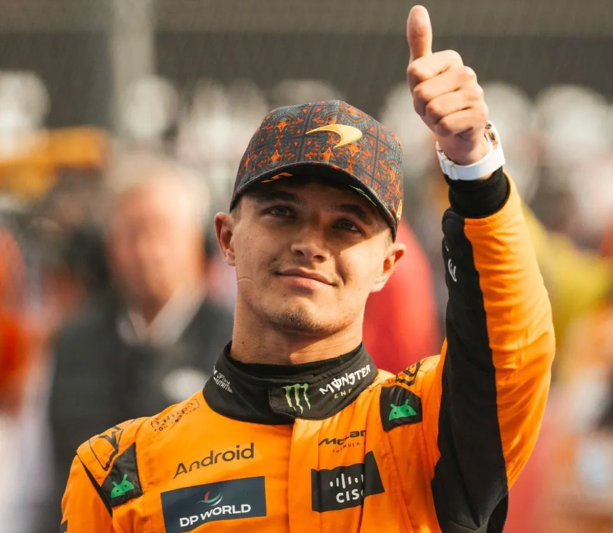
Oscar Piastri (Melbourne, 6 de abril de 2001) é um automobilista australiano que compete na Fórmula 1 pela equipe McLaren. Considerado um dos maiores talentos de sua geração, Piastri teve uma ascensão meteórica no automobilismo, conquistando títulos consecutivos nas principais categorias de base antes mesmo de chegar à elite do esporte.
Sua trajetória rumo à Fórmula 1 é uma das mais impressionantes dos últimos anos. Em 2019, foi campeão da Eurocopa de Fórmula Renault com a R-ace GP. No ano seguinte, conquistou o título do Campeonato de Fórmula 3 da FIA, e em 2021 sagrou-se campeão da Fórmula 2 com a Prema Racing, tornando-se um dos poucos pilotos da história a vencer F3 e F2 de forma consecutiva como estreante — feito que o colocou ao lado de nomes como Charles Leclerc e George Russell.
Antes de sua estreia na Fórmula 1, Piastri passou pela academia da Alpine F1 Team, onde atuou como piloto de testes e reserva. Sua transição para a categoria principal, no entanto, ficou marcada por um dos episódios contratuais mais controversos da história recente da F1. Após um impasse com a Alpine, que chegou a anunciá-lo como titular sem seu consentimento, o caso foi levado ao Conselho de Reconhecimento de Contratos da FIA, que decidiu a favor do piloto, garantindo sua ida para a McLaren em 2023.
Em sua temporada de estreia na Fórmula 1, em 2023, Piastri rapidamente demonstrou seu potencial. Mesmo sendo novato, conquistou pódios e venceu uma corrida sprint no Grande Prêmio do Catar, evidenciando sua capacidade de adaptação e sangue frio em situações de alta pressão.
O ano de 2024 marcou sua consolidação na categoria. Piastri conquistou sua primeira vitória em um Grande Prêmio no Grande Prêmio da Hungria, tornando-se o primeiro piloto nascido no século XXI a vencer uma corrida de Fórmula 1. Ao longo da temporada, somou vitórias importantes, incluindo o triunfo no Azerbaijão, e desempenhou papel fundamental na conquista do título de construtores da McLaren — o primeiro da equipe desde 1998. Terminou o campeonato em quarto lugar, demonstrando consistência e evolução contínua.
Em 2025, Piastri deu um passo ainda maior em sua carreira ao entrar definitivamente na disputa pelo título mundial. Após conquistar sua primeira pole e vitória do ano no Grande Prêmio da China, o australiano assumiu a liderança do campeonato e se manteve competitivo durante grande parte da temporada. Com performances dominantes — incluindo um hat-trick no Bahrein e vitórias em circuitos importantes como Espanha e Bélgica — Piastri se estabeleceu como um dos protagonistas do grid.
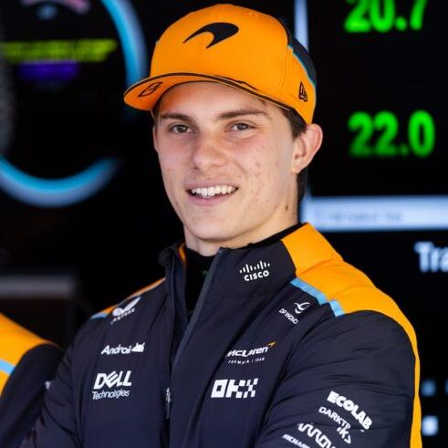
A Mercedes-Benz, por meio da Mercedes-AMG Petronas Formula One Team, é uma das forças mais dominantes e influentes da história da Fórmula 1. Sediada em Brackley, no Reino Unido, mas competindo sob licença alemã, a equipe carrega um legado que remonta às primeiras décadas do automobilismo moderno.
Antes mesmo da criação da Fórmula 1, a Mercedes já era protagonista nas corridas de Grande Prêmio da década de 1930, quando suas lendárias “Flechas de Prata” dominaram as pistas europeias. Esse domínio inicial ajudou a consolidar a marca como sinônimo de excelência técnica e inovação no automobilismo.
A estreia oficial na Fórmula 1 aconteceu em 1954, e foi imediatamente histórica: com o icônico W196, a equipe venceu sua primeira corrida no Grande Prêmio da França. Liderada por Juan Manuel Fangio, a Mercedes conquistou os títulos mundiais de 1954 e 1955, demonstrando superioridade absoluta em um curto período. No entanto, a tragédia das 24 Horas de Le Mans em 1955 levou a montadora a se retirar completamente do automobilismo, interrompendo uma trajetória promissora.
O retorno à Fórmula 1 ocorreu de forma gradual a partir de 1994, inicialmente como fornecedora de motores em parceria com a Ilmor, e posteriormente em colaboração com equipes como a McLaren. Essa fase marcou o início de uma nova era de sucesso nos bastidores da categoria.
A volta como equipe oficial aconteceu em 2010, após a aquisição da então campeã Brawn GP. Sob a liderança de Ross Brawn e, posteriormente, de Toto Wolff, a Mercedes construiu uma das maiores dinastias da história do esporte. Entre 2014 e 2020, na era dos motores híbridos, a equipe dominou a Fórmula 1 de maneira sem precedentes, conquistando oito campeonatos consecutivos de construtores e sete títulos de pilotos, com destaque para Lewis Hamilton e Nico Rosberg.
Durante esse período, a Mercedes quebrou inúmeros recordes, incluindo números impressionantes de vitórias, dobradinhas e poles positions, estabelecendo novos padrões de excelência técnica e eficiência estratégica na categoria.
Além de seu sucesso como equipe, a Mercedes também desempenha um papel fundamental como fornecedora de motores, contribuindo para conquistas de outras equipes e acumulando mais de 160 vitórias nessa função — consolidando-se como uma das fabricantes mais bem-sucedidas da história da Fórmula 1.
Nos anos mais recentes, após o fim de sua hegemonia, a equipe enfrenta novos desafios técnicos e competitivos, buscando se reinventar em um cenário cada vez mais equilibrado. Ainda assim, sua estrutura sólida, tradição vencedora e capacidade de inovação mantêm a Mercedes como uma das principais referências do esporte.

O George Russell é um piloto britânico de Fórmula 1, nascido em 15 de fevereiro de 1998, em King’s Lynn, Inglaterra. Atualmente, compete pela equipe Mercedes-AMG Petronas Formula One Team e é considerado um dos principais talentos de sua geração.
Russell iniciou sua carreira no kart em 2006, conquistando diversos títulos nacionais e internacionais ainda jovem. Sua transição para os monopostos aconteceu em 2014, ano em que venceu a Fórmula 4 BRDC. Nos anos seguintes, destacou-se rapidamente nas categorias de base, tornando-se campeão da GP3 Series em 2017 e da Fórmula 2 em 2018, ambos os títulos conquistados com a equipe ART Grand Prix. Seu desempenho consistente o colocou no radar da Mercedes, ingressando no programa de jovens pilotos da equipe em 2017.
Sua estreia na Fórmula 1 como piloto titular ocorreu em 2019, pela equipe Williams Racing. Apesar das limitações do carro, Russell demonstrou forte desempenho, frequentemente superando seus companheiros de equipe e chamando atenção pela sua consistência. Em 2020, teve a oportunidade de substituir Lewis Hamilton na Mercedes durante o Grande Prêmio de Sakhir, onde impressionou ao liderar a maior parte da corrida.
Em 2022, Russell foi promovido à equipe principal da Mercedes. Logo em sua primeira temporada, conquistou sua primeira vitória na Fórmula 1 no Grande Prêmio de São Paulo, garantindo também a única vitória da equipe naquele ano. Desde então, consolidou-se como peça-chave da equipe, especialmente após a saída de Hamilton, assumindo um papel de liderança.
Nas temporadas seguintes, Russell continuou evoluindo, acumulando pódios, vitórias e desempenhos consistentes. Em 2026, com mudanças significativas no regulamento técnico, a Mercedes voltou a ter um carro competitivo, e Russell emergiu como um dos principais candidatos ao título mundial, destacando-se como líder da equipe e protagonista na disputa pelo campeonato.
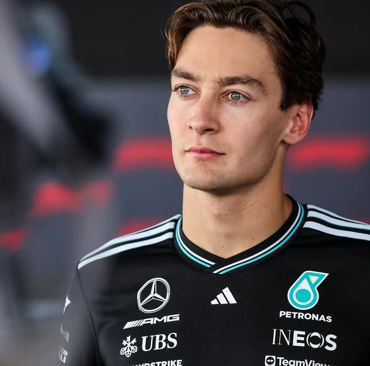
Andrea Kimi Antonelli (Bolonha, 25 de agosto de 2006), mais conhecido como Kimi Antonelli, é um automobilista italiano que atualmente compete na Fórmula 1 pela equipe Mercedes. Anteriormente, competiu na Fórmula 2 pela equipe Prema Racing.
Antonelli conquistou diversos títulos em categorias de base do automobilismo, destacando-se como campeão da Fórmula 4 Italiana e da Fórmula 4 Alemã pela Prema Racing, além de vencer o Campeonato de Fórmula Regional do Oriente Médio e o Campeonato Europeu de Fórmula Regional (FRECA), ambos em 2023. Ele integra a Mercedes Junior Team desde 2019. Em setembro de 2024, foi oficialmente anunciado como piloto titular da Mercedes para a temporada de 2025 da Fórmula 1.
Em 2026, Antonelli entrou para a história ao se tornar o piloto mais jovem a liderar uma corrida de Fórmula 1, durante o Grande Prêmio da China, aos 19 anos. No dia seguinte, conquistou sua primeira vitória na categoria. Posteriormente, ao vencer o Grande Prêmio do Japão, tornou-se o piloto mais jovem a liderar o campeonato mundial e o primeiro italiano a alcançar esse feito desde Giancarlo Fisichella, em 2005.
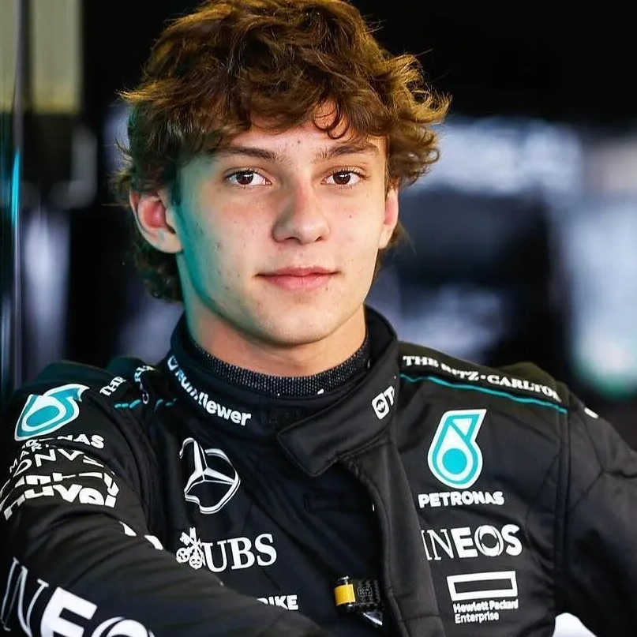
A Visa Cash App RB Formula One Team, também conhecida como Racing Bulls ou pelas abreviações RB e VCARB, é uma equipe e construtor italiana de Fórmula 1 com sede em Faenza, na Itália. A equipe pertence à empresa austríaca de bebidas energéticas Red Bull GmbH, que também é proprietária da Red Bull Racing. A Racing Bulls foi formada para disputar a Fórmula 1 a partir da temporada de 2024, após a renomeação da antiga Scuderia AlphaTauri. Desde julho de 2025, a equipe é chefiada por Alan Permane.
As origens da Racing Bulls remontam à equipe Minardi, que estreou na Fórmula 1 em 1985. A equipe italiana disputou 21 temporadas na categoria, sendo conhecida por sua baixa competitividade, com seu melhor resultado sendo o sétimo lugar no campeonato de construtores em 1991. Apesar de nunca ter conquistado um pódio, chegou a terminar em quarto lugar em três ocasiões.
Em 10 de setembro de 2005, a Minardi foi adquirida pela Red Bull GmbH, com os novos proprietários assumindo oficialmente a equipe em 1º de novembro do mesmo ano. A partir da temporada de 2006, passou a se chamar Scuderia Toro Rosso.
Após catorze temporadas com esse nome, a equipe solicitou, em setembro de 2019, a mudança para Scuderia AlphaTauri, adotada oficialmente a partir de 2020. O novo nome fazia referência à marca de moda da Red Bull.
Em junho de 2023, o consultor da Red Bull, Helmut Marko, anunciou uma nova mudança de identidade para 2024, como parte de uma reestruturação da equipe. Inicialmente, o time apareceu com o nome “RB”, sendo posteriormente confirmado como “Visa Cash App RB F1 Team”.
O nome deriva dos patrocinadores principais, Visa e Cash App, enquanto “RB” representa o nome do construtor, operado pela empresa Racing Bulls S.p.A. Em novembro de 2024, o CEO Peter Bayer anunciou que a equipe deixaria de usar o acrônimo “RB” e passaria a adotar oficialmente o nome “Racing Bulls” como construtor a partir da temporada de 2025.

Arvid Anand Olof Lindblad (Surrey, 8 de agosto de 2007) é um automobilista britânico que atualmente compete na Fórmula 1 pela equipe Racing Bulls. Anteriormente, disputou o Campeonato de Fórmula 2 da FIA pela equipe Campos Racing em 2025. Ele foi campeão da Fórmula Regional da Oceania em 2025, venceu o Grande Prêmio de Macau de Fórmula 4 de 2023 e integra a Red Bull Junior Team desde 2021.
Após uma breve passagem pelo motocross, iniciou no kart aos cinco anos e começou a competir em 2015. Em 2018, tornou-se campeão britânico na categoria cadete, e ao longo dos anos seguintes conquistou títulos importantes como a WSK Super Master Series e a Champions of Future, além de bons resultados em campeonatos europeus e mundiais. Seu melhor ano no kart foi em 2021, quando venceu múltiplos campeonatos na categoria OK, encerrando sua trajetória no kart em 2022 com um terceiro lugar no Mundial da FIA.
Em 2022, estreou nos monopostos na Fórmula 4 Italiana pela Van Amersfoort Racing, começando de forma dominante com várias vitórias, mas terminando o campeonato em terceiro lugar após perder desempenho nas etapas finais. Em 2023, competiu em múltiplas categorias de Fórmula 4, incluindo os campeonatos italiano e dos Emirados Árabes Unidos, conquistando vitórias e acumulando experiência, além de vencer duas corridas em Macau na F4 asiática.
Em 2024, subiu para a Fórmula 3 pela Prema Racing, sendo o piloto com mais vitórias na temporada, com quatro triunfos. Apesar do forte desempenho, resultados inconsistentes o deixaram na quarta posição do campeonato, ainda assim sendo o melhor estreante e peça importante no título de equipes da Prema.
No final de 2024, disputou a Fórmula Regional da Oceania pela M2 Competition para garantir pontos de superlicença, dominando o campeonato e conquistando o título com seis vitórias e doze pódios. Em 2025, competiu na Fórmula 2 pela Campos Racing, onde conquistou três vitórias e tornou-se o piloto mais jovem a vencer uma corrida na categoria, encerrando a temporada em sexto lugar.
Membro da Red Bull Junior Team desde 2021, Lindblad participou de diversos testes e treinos livres na Fórmula 1 ao longo de 2024 e 2025. Em 2025, recebeu sua superlicença antes dos 18 anos, o que permitiu sua promoção antecipada à categoria principal. Em dezembro do mesmo ano, foi confirmado como piloto da Racing Bulls para a temporada de 2026, ao lado de Liam Lawson.
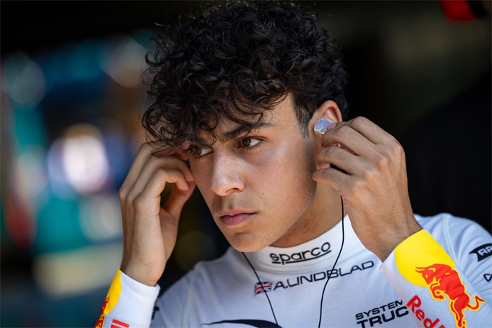
Liam Lawson (Hastings, 11 de fevereiro de 2002) é um automobilista neozelandês que atualmente compete na Fórmula 1 pela equipe Racing Bulls. Estreou na categoria em 2023 pela AlphaTauri, substituindo Daniel Ricciardo após uma lesão no braço, e disputou cinco corridas até o retorno do titular. Em 2024, passou a substituir Ricciardo de forma definitiva a partir do Grande Prêmio dos Estados Unidos. Já em 2025, foi promovido à Red Bull Racing, mas disputou apenas duas corridas pela equipe principal antes de retornar à Racing Bulls. Lawson foi campeão da Toyota Racing Series em 2019 e integra a Red Bull Junior Team desde 2019.
Lawson iniciou no kart aos sete anos, conquistando títulos nacionais ainda jovem. Em 2015, estreou nos monopostos na Nova Zelândia, rapidamente se destacando e conquistando o título da NZ F1600 em 2016, tornando-se o mais jovem campeão da história da categoria. Em 2017, foi vice-campeão da Fórmula 4 australiana, e no ano seguinte repetiu o resultado na ADAC Fórmula 4, mostrando consistência em campeonatos internacionais. Em 2019, conquistou o título da Toyota Racing Series, incluindo a vitória no Grande Prêmio da Nova Zelândia.
Ainda em 2019, estreou na Fórmula 3 da FIA, onde teve desempenho sólido e evoluiu significativamente em 2020, conquistando três vitórias e terminando entre os cinco melhores do campeonato. Em 2021, subiu para a Fórmula 2, vencendo logo na estreia no Bahrein e encerrando o campeonato em nono lugar. Em 2022, teve sua melhor temporada na categoria, com quatro vitórias e dez pódios, finalizando em terceiro lugar na classificação geral.
Paralelamente, Lawson também competiu na DTM em 2021, onde disputou o título até a última etapa, terminando como vice-campeão após um final controverso. Em 2023, competiu na Super Fórmula Japonesa, brigando pelo título até o fim e terminando novamente como vice-campeão, além de conciliar essa campanha com sua estreia na Fórmula 1.
Na Fórmula 1, ganhou destaque ao substituir Ricciardo na AlphaTauri em 2023, pontuando em Singapura. Em 2024, assumiu definitivamente um dos carros da então RB (Racing Bulls), pontuando em duas corridas. Sua promoção à Red Bull em 2025 veio como um grande passo na carreira, mas seu desempenho nas duas primeiras etapas não atendeu às expectativas da equipe, resultando em sua substituição precoce.
De volta à Racing Bulls em 2025, Lawson apresentou evolução consistente, conquistando resultados sólidos ao longo da temporada, incluindo um sexto lugar na Áustria e um quinto lugar no Azerbaijão, seu melhor resultado na Fórmula 1 até então. Encerrando o ano com 38 pontos, terminou na 14ª posição do campeonato. Para 2026, foi confirmado como piloto da Racing Bulls, formando dupla com o estreante Arvid Lindblad, consolidando sua permanência no grid da Fórmula 1.
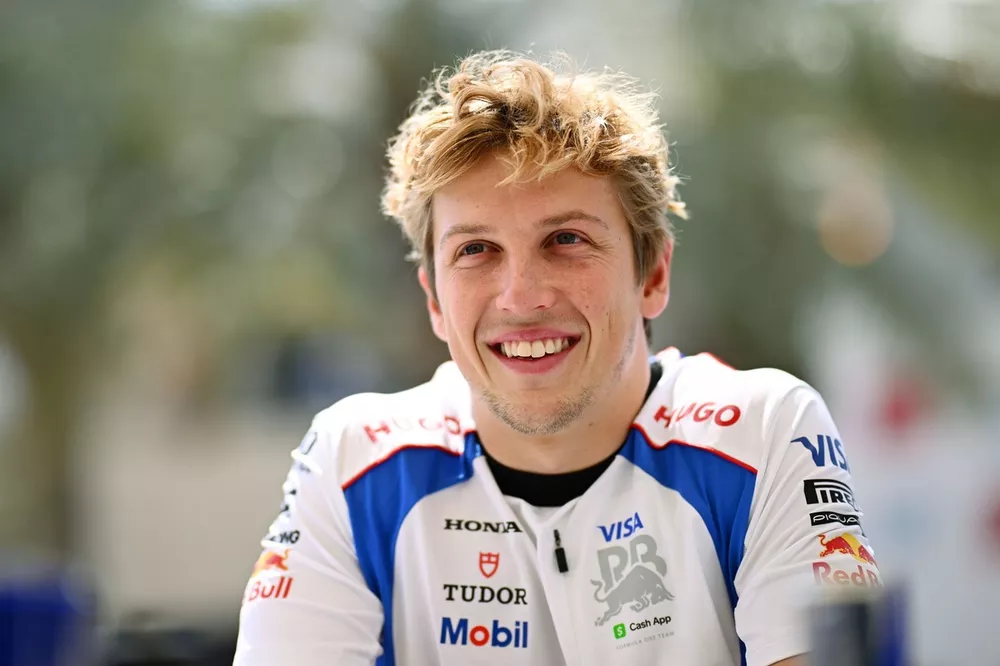
A Red Bull Racing, atualmente chamada de Oracle Red Bull Racing, é uma equipe de Fórmula 1 baseada no Reino Unido que compete sob licença austríaca e pertence à Red Bull GmbH, sendo a “irmã maior” da Racing Bulls. Criada após a compra da Jaguar no fim de 2004, a equipe rapidamente evoluiu até conquistar sua primeira vitória em 2009 com Sebastian Vettel, iniciando uma era dominante entre 2010 e 2013, quando venceu quatro títulos consecutivos de construtores e pilotos.
Após alguns anos de oscilação, voltou ao topo com Max Verstappen, campeão mundial em 2021, 2022, 2023 e 2024, consolidando uma nova fase de domínio. Fora das pistas, a equipe passou por tensões internas em 2024, envolvendo sua liderança, e em julho de 2025 houve uma mudança importante na chefia, com Laurent Mekies assumindo o comando no lugar de Christian Horner.
Na temporada de 2025, a Red Bull começou como favorita, mas enfrentou forte concorrência e instabilidade no segundo carro, com mudanças rápidas na formação de pilotos — incluindo a breve passagem de Liam Lawson pela equipe principal. Ainda assim, Verstappen manteve alto nível de desempenho e seguiu brigando no topo do campeonato.
á em 2026, com a mudança de regulamento dos motores, a equipe perdeu parte de sua vantagem técnica para rivais como a Mercedes, entrando em uma fase mais competitiva e menos dominante, mas ainda se mantendo como uma das principais forças do grid, apostando na consistência de Verstappen e em ajustes estruturais sob a nova liderança para continuar na disputa por vitórias e títulos.
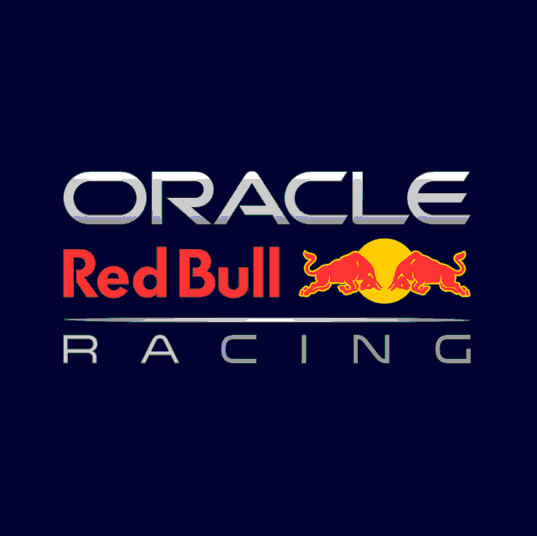
Max Emilian Verstappen (Hasselt, 30 de setembro de 1997) é um automobilista neerlandês que compete na Fórmula 1 desde 2015 e é tetracampeão mundial consecutivo entre 2021 e 2024, além de vice-campeão em 2025, sempre com destaque pela Red Bull Racing, equipe que defende desde 2016. Considerado um dos maiores talentos da história da categoria, Verstappen detém diversos recordes, como o de piloto mais jovem a estrear, pontuar e vencer uma corrida na Fórmula 1, conquistando sua primeira vitória no Grande Prêmio da Espanha de 2016 com apenas 18 anos.
Filho do ex-piloto Jos Verstappen, iniciou no kart ainda criança e rapidamente se destacou nas categorias de base, chegando à Fórmula 1 com apenas 17 anos pela Toro Rosso. Sua ascensão meteórica continuou com a promoção à Red Bull, onde construiu uma carreira marcada por agressividade, consistência e domínio técnico.
Em 2021, conquistou seu primeiro título mundial após uma intensa disputa com Lewis Hamilton, decidida na última volta em Abu Dhabi, tornando-se o primeiro campeão neerlandês da história. Nos anos seguintes, consolidou uma era dominante ao vencer os campeonatos de 2022, 2023 e 2024, quebrando recordes de vitórias e desempenho ao longo das temporadas.
Em 2024, apesar de enfrentar maior concorrência, garantiu o título com antecedência após uma disputa mais equilibrada, principalmente contra Lando Norris. Já em 2025, Verstappen iniciou o ano competitivo, conquistando vitórias importantes e se mantendo na briga pelo título até o fim, incluindo desempenhos dominantes em etapas como Itália, Azerbaijão e Estados Unidos.
Apesar da forte recuperação na segunda metade da temporada, terminou como vice-campeão por uma margem mínima de apenas dois pontos, encerrando sua sequência de títulos consecutivos. Para 2026, Verstappen permanece como peça central da Red Bull Racing sob nova liderança de Laurent Mekies, entrando na temporada como um dos principais candidatos ao título e buscando iniciar uma nova fase vitoriosa na categoria.
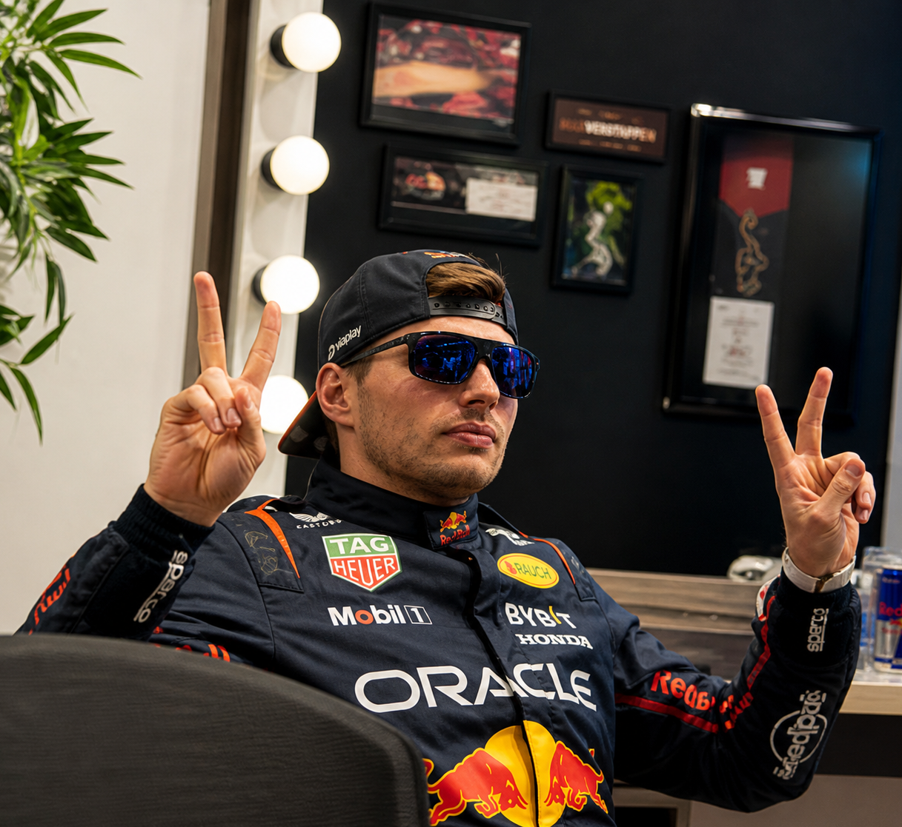
Isack Alexandre Hadjar (Paris, 28 de setembro de 2004) é um automobilista franco-argelino que compete na Fórmula 1 e foi anunciado como piloto da Red Bull Racing para a temporada de 2026. Ele estreou na categoria em 2025 pela Racing Bulls, após se destacar nas categorias de base, incluindo o vice-campeonato da Fórmula 2 em 2024 pela Campos Racing. Também foi campeão entre os estreantes da Fórmula Regional Europeia em 2021 e integra o programa Red Bull Junior Team.
Sua carreira começou no kart em 2015, evoluindo rapidamente até chegar aos monopostos em 2019, quando disputou a Fórmula 4 Francesa. Após temporadas consistentes, passou por categorias como Fórmula Regional e Fórmula 3, onde se destacou com vitórias e disputas pelo título. Em 2023, estreou na Fórmula 2 com a Hitech e, no ano seguinte, transferiu-se para a Campos Racing, onde viveu sua melhor fase, vencendo corridas importantes e brigando pelo campeonato até a última etapa, terminando como vice-campeão.
Hadjar já fazia parte da academia da Red Bull desde 2021 e teve suas primeiras experiências com carros de Fórmula 1 em treinos livres ainda em 2023. Em 2025, estreou oficialmente na categoria pela Racing Bulls, mostrando evolução ao longo da temporada, com pontos consistentes e destaque para seu primeiro pódio, conquistado no Grande Prêmio dos Países Baixos, onde terminou em terceiro após uma performance sólida.
Com o bom desempenho em seu ano de estreia, foi promovido à Red Bull Racing para 2026, onde será companheiro de Max Verstappen. A expectativa é que Hadjar represente a nova geração da equipe, entrando em um dos assentos mais competitivos do grid e tendo a oportunidade de disputar posições de destaque já em suas primeiras temporadas na equipe principal.
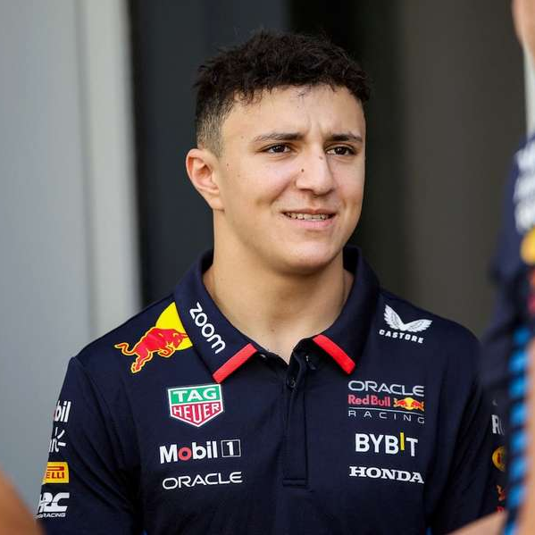
A Williams Grand Prix Engineering Limited, atualmente competindo como Atlassian Williams F1 Team, é uma equipe e construtor de Fórmula 1 fundada por Frank Williams e Patrick Head. A equipe foi formada em 1977, após duas tentativas anteriores malsucedidas de Frank Williams: a Frank Williams Racing Cars (1969 a 1975) e a Wolf–Williams Racing (1976).
A primeira corrida da equipe foi o Grande Prêmio da Espanha de 1977, utilizando um chassi da March pilotado por Patrick Nève. Já em 1979, a Williams conquistou sua primeira vitória com Clay Regazzoni no Grande Prêmio da Grã-Bretanha. Ao longo das décadas seguintes, tornou-se uma das equipes mais vitoriosas da história da Fórmula 1, acumulando nove títulos de construtores entre 1980 e 1997. Em 1997, Jacques Villeneuve garantiu a centésima vitória da equipe.
Além da Fórmula 1, a Williams também expandiu suas atividades para áreas tecnológicas com a Williams Advanced Engineering e a Williams Hybrid Power. Em 2020, a equipe foi adquirida pelo grupo Dorilton Capital, marcando o início de uma nova fase administrativa.
A trajetória da equipe é marcada por ciclos de domínio e declínio. Nos anos 1980 e 1990, conquistou diversos títulos com pilotos como Alan Jones, Keke Rosberg, Nigel Mansell, Alain Prost, Damon Hill e Jacques Villeneuve. Após o fim da parceria com a Renault no final dos anos 1990, a equipe perdeu competitividade, mesmo tendo bons momentos com a BMW no início dos anos 2000.
A partir de 2010, a Williams enfrentou dificuldades mais consistentes, alternando entre posições intermediárias e o fundo do grid. Um breve período de recuperação ocorreu entre 2014 e 2015, quando a equipe voltou ao top 3 do campeonato de construtores, impulsionada pelos motores Mercedes e pela dupla Felipe Massa e Valtteri Bottas.
Entre 2018 e 2020, a equipe viveu sua pior fase, terminando consecutivamente na última posição do campeonato. Problemas financeiros e de desempenho culminaram na venda para a Dorilton Capital. A partir de 2021, iniciou-se um processo de reconstrução, com melhorias graduais e mudanças estruturais.
Nos anos mais recentes, a Williams apresentou sinais de evolução. Em 2023, sob o comando de James Vowles, a equipe terminou em sétimo lugar no campeonato, com destaque para Alexander Albon. Em 2024, enfrentou dificuldades operacionais e limitações de recursos, mas continuou em processo de reestruturação.
Já em 2025, a equipe deu um passo importante em sua recuperação. Com a dupla Alexander Albon e Carlos Sainz, o carro FW47 mostrou desempenho consistente, com diversas chegadas no top 5 e pódios conquistados por Sainz, algo que não acontecia há vários anos. Esses resultados indicam que a Williams está gradualmente retornando à competitividade dentro da Fórmula 1.
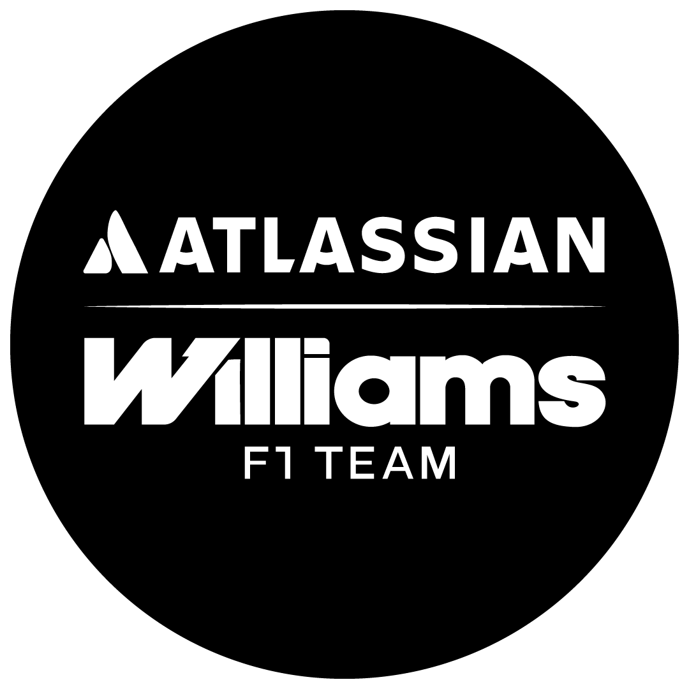
Carlos Sainz Vázquez de Castro Cenamor Rincón Rebollo Virto Moreno de Aranda Don Per Urrielagoiria Pérez del Pulgar, mais conhecido como Carlos Sainz Jr. (Madrid, 1 de setembro de 1994), é um piloto espanhol de automobilismo que atualmente compete na Fórmula 1 pela equipe Williams. Filho do bicampeão mundial de rali Carlos Sainz, fez parte da Red Bull Junior Team entre 2010 e 2014.
Ele iniciou sua carreira na Fórmula 1 em 2015 pela Toro Rosso, onde permaneceu até 2017. Nesse período, destacou-se pela consistência, apesar de enfrentar problemas mecânicos e dividir equipe com nomes como Max Verstappen. Ainda em 2017, foi emprestado à Renault, onde correu até o final de 2018.
Antes de chegar à Fórmula 1, Sainz construiu uma base sólida nas categorias de base. No kart, venceu a Junior Monaco Kart Cup em 2009. Em monopostos, teve passagens pela Fórmula BMW e GP3, mas seu grande destaque veio na Fórmula Renault 3.5, onde foi campeão em 2014 com a equipe DAMS, superando pilotos que também chegariam à F1.
Após deixar a Renault, ingressou na McLaren em 2019, formando uma dupla competitiva com Lando Norris. Nesse período, conquistou seu primeiro pódio na Fórmula 1 no Grande Prêmio do Brasil de 2019 e terminou a temporada como o “melhor do resto”, em sexto lugar no campeonato. Em 2020, quase venceu o Grande Prêmio da Itália, terminando em segundo após intensa disputa com Pierre Gasly.
Em 2021, Sainz se juntou à Ferrari ao lado de Charles Leclerc. Mesmo em um início desafiador, mostrou forte desempenho, conquistando pódios consistentes. Sua primeira vitória na Fórmula 1 veio em 2022, no Grande Prêmio da Grã-Bretanha. Em 2023, destacou-se ao vencer o GP de Singapura, sendo o único piloto fora da Red Bull a vencer naquela temporada.
Na temporada de 2024, ainda pela Ferrari, Sainz viveu um de seus melhores anos. Mesmo após passar por uma cirurgia de apêndice, retornou rapidamente e venceu o Grande Prêmio da Austrália. Também conquistou outra vitória no México e diversos pódios ao longo do ano, encerrando sua passagem pela equipe italiana com 25 pódios no total.
Em 2025, Sainz se transferiu para a Williams, assinando um contrato de dois anos com opção de extensão. Seu início foi difícil, com abandonos e dificuldades de adaptação, mas ao longo da temporada apresentou evolução. Conquistou dois pódios importantes — no Azerbaijão e no Catar — ajudando a equipe a voltar a figurar entre os melhores resultados recentes.
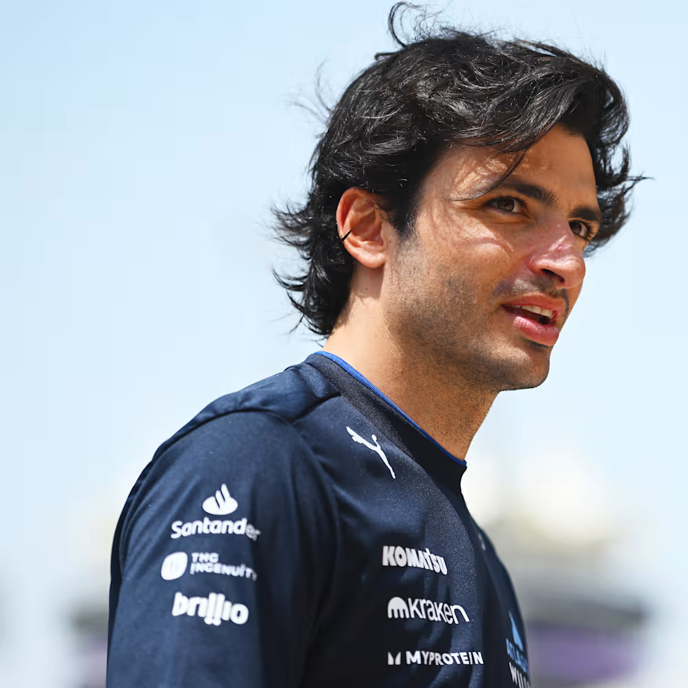
Alexander Philippe Albon Ansusinha (Londres, 23 de março de 1996) é um automobilista anglo-tailandês que compete na Fórmula 1 pela Williams. Estreou na categoria em 2019 pela Toro Rosso e, ainda naquela temporada, foi promovido à Red Bull, onde permaneceu até 2020.
Albon iniciou a carreira no kart ainda criança, conquistando títulos importantes, como o campeonato europeu e mundial da KF3 em 2010. Depois, passou por categorias de base como Fórmula Renault, Fórmula 3 e GP3, onde foi vice-campeão em 2016. Em 2018, teve destaque na Fórmula 2 ao terminar em terceiro lugar no campeonato.
Na Fórmula 1, começou bem na Toro Rosso, pontuando com frequência, o que lhe rendeu a promoção à Red Bull. Em 2020, conquistou seus primeiros pódios na categoria, mas acabou sendo substituído ao final da temporada, assumindo o papel de piloto reserva em 2021.
Retornou ao grid em 2022 com a Williams, onde rapidamente se destacou como líder da equipe. Em 2023, foi responsável pela grande maioria dos pontos do time, ajudando na recuperação no campeonato. Em 2024, enfrentou mais dificuldades, mas ainda conseguiu alguns bons resultados.
Na temporada de 2025, passou a ter Carlos Sainz Jr. como companheiro de equipe. Começou o ano de forma consistente, com várias chegadas no top 10, mas perdeu desempenho na parte final do campeonato. Ainda assim, terminou entre os dez melhores pilotos e seguiu como peça-chave no desenvolvimento da equipe.
Além da Fórmula 1, Albon competiu na DTM em 2021, onde conquistou uma vitória e terminou a temporada em sexto lugar.
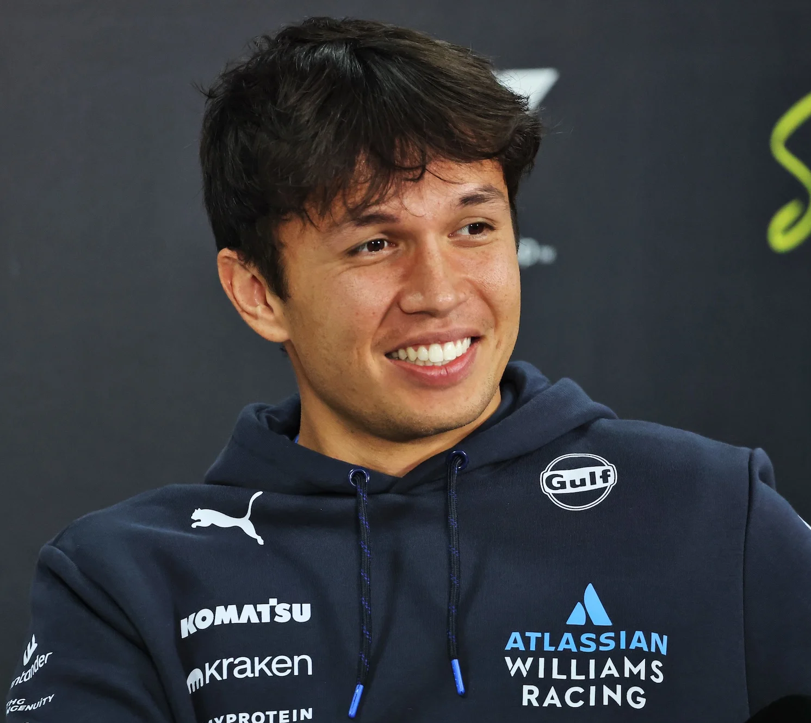